Tema 18.- Conceptos básicos de Geobotánica
| Carlos Romero Zarco, Universidad de Sevilla |
| Estudio
de la distribución de las plantas: Corología y
Florística |
||||||||||||||
|
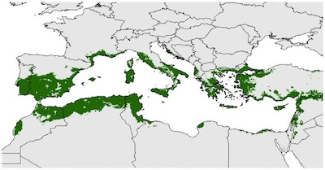 Distribución del olivo (Olea
europaea)
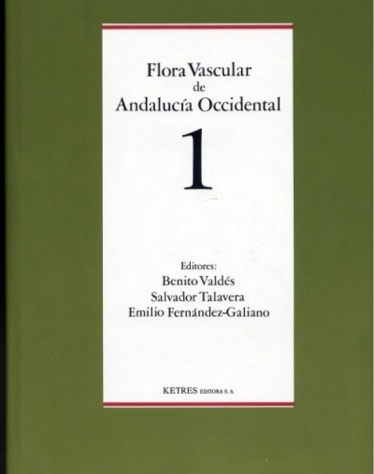 Portada de una flora 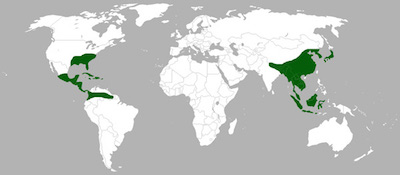 Distribución disyunta del género Magnolia
|
|
|||||||||||||
| Biomas de la Tierra |
|||||||||||||||||||||
|
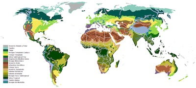 Biomas terrestres basados en la vegetación. De SirHenrry - Trabajo propio, CC BY-SA 4.0, https://commons.wikimedia.org 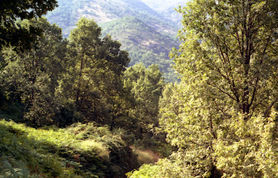 Robledal de Quercus pyrenaica en la comarca de La Vera (Cáceres). C.R.Z. 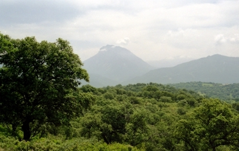 Encinar denso (Quercus rotundifolia) en Prado del Rey (Cádiz). C.R.Z. 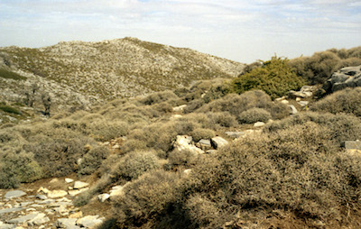 Matorral espinoso de Bupleurum spinosum en la Sierra de las Nieves (Málaga). C.R.Z. 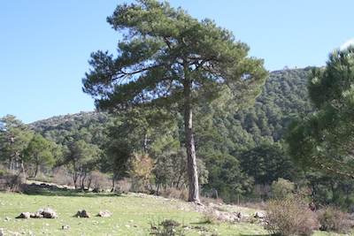 Pinar de alta montaña. Pinus nigra subsp. salzmanii en la Srra. de Alcaraz 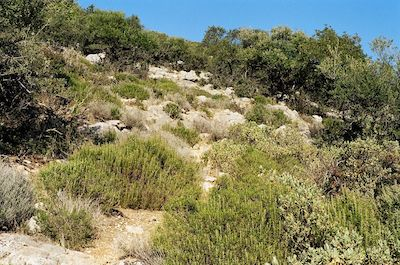 Romeral-tomillar en la Srra. de Esparteros (Sevilla).C.R.Z. 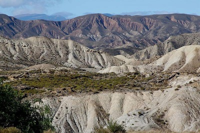 Paisaje del Desierto de Tabernas (Almería). |
||||||||||||||||||||
|
|||||||||||||||||||||
| Estatus florístico de los
taxones |
|||||||||||||||||||
|
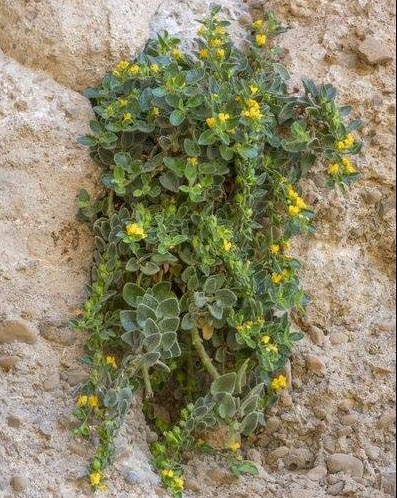 Gadoria falukei (plantaginácea),
género y
especie endémicos de la Srra. de Gádor (Almería), descrita en 2017. Foto: Andrés Ivorra (Facebook). 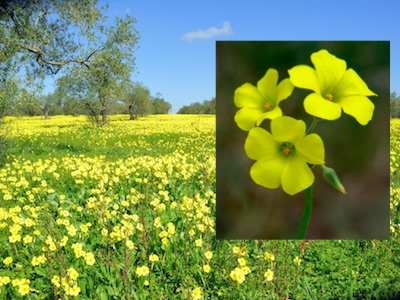 Oxalis pes-caprae (vinagrito, oxalidácea), neófito sudafricano muy abundante en ambientes antrópicos. Foto de fondo: A. Campano; detalle A. Ivorra (Facebook) 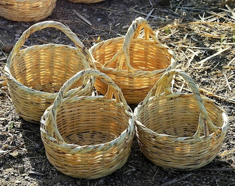 Cestos de caña común (Arundo donax, gramínea), arqueófita potencialmente invasora en España. Foto: E. Sánchez Gullón (Facebook), 2020. 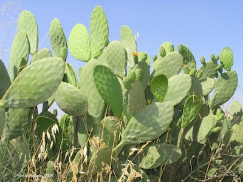 Opuntia sp. (tuna, chumbera, cactácea), neófitas americanas muy apreciadas en ambientes agrícolas, pero potencialmente invasoras. Foto: V. Bellerín. 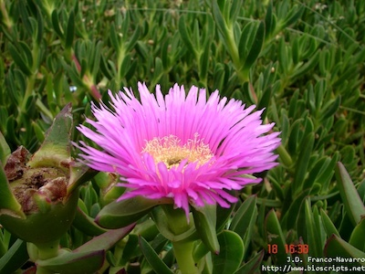 Carpobrotus edulis (uña de león, aizoácea), neófito sudafricano invasor en la vegetación costera. Foto: J.D. Franco Navarro. 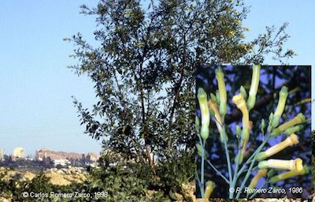 Nicotiana glauca (gandul, tabaco moruno, neófita americana. |
|
||||||||||||||||||
|
|||||||||||||||||||
| Reinos biogeográficos |
|||||||||||||
|
Alfred Russell Wallace, el otro "padre" de la Biogeografía 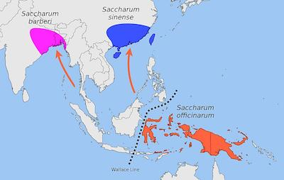 Línea de Wallace, que
separa Indonesia en
dos zonas en función de la distribución de fauna y flora. 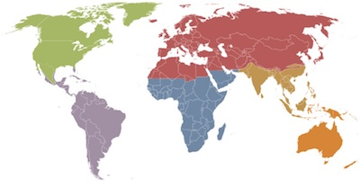 Reinos biogeográficos del WWF. De User: Lokal_Profil., CC BY-SA 3.0, https://commons.wikimedia.org |
||||||||||||
| Biodiversidad
Vegetal |
||||||||||
|
Eward Osborne Wilson; Universidad
de Harvard,
2003. De Jim Harrison - PLoS, CC BY 2.5, https://commons.wikimedia.org Hotspots de Biodiversidad
mundial (2001)
Ninjatacoshell-CC BY-SA 3.0, https://commons.wikimedia.org 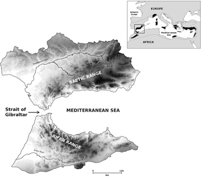 Hotspot vegetal del arco montañoso Bético-Rifeño (4) |
|
|||||||||
| Resumen |